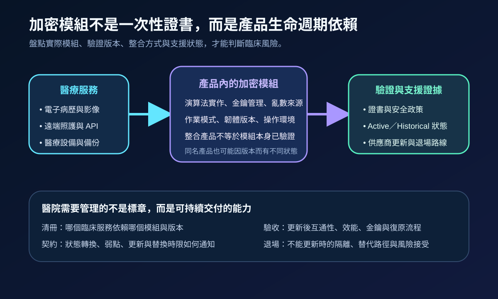
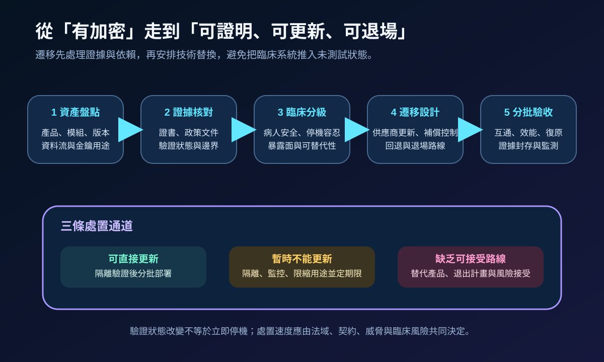
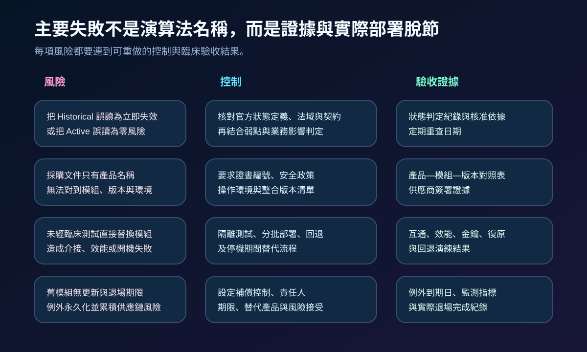

醫療資安國際觀察 · 2026-09-23
醫療加密模組如何因應驗證狀態轉換：從證書盤點到臨床遷移
作者：Dr. William｜醫療資訊與資安治理實務工作者
加密功能寫在規格書上，不代表醫院已掌握實際使用的模組、版本、驗證邊界與更新能力。當驗證證書轉為 Historical，治理重點是判斷法域與契約影響、核對產品依賴，並在不破壞臨床服務的前提下完成更新或退場。
名詞解釋：模組驗證不等於整套產品認證
加密模組是執行密碼演算法、金鑰管理、亂數產生及安全狀態控制的硬體、軟體或韌體邊界；CMVP由美國 NIST 與加拿大網路安全中心共同運作，驗證模組是否符合 FIPS 140 系列要求；Active與Historical是驗證清單狀態，並非「安全」與「已遭破解」的同義詞。產品是否正確整合模組、是否落在證書列出的操作環境，仍須另行確認。
國際現況與適用邊界
NIST 的 FIPS 140-3 轉換說明指出，FIPS 140-2 證書於 2026 年 9 月 22 日移入 Historical 清單；既有系統仍可依機關決策採購或使用 Historical 模組，但採購者需確認模組是否符合實際需求。FIPS 140-3 已取代 FIPS 140-2，驗證流程採用 ISO／IEC 19790 與 ISO／IEC 24759 的要求框架。
加拿大網路安全中心於 2025 年 9 月發布密碼採購契約指引，建議產品與服務使用具 Active CMVP 證書的模組、依安全政策操作，並在契約中處理演算法更新、密碼敏捷性與供應商責任。這些要求分別屬美國與加拿大政府法域及採購體系，不是台灣醫療機構的直接法定義務。
對台灣醫療機構的意義：可將國際驗證狀態作為供應鏈證據與遷移訊號，但不能只看證書顏色決定停機或替換。處置需同時考量台灣主管機關要求、院內契約、實際威脅、病人安全、更新可行性及臨床停機容忍度。
規劃：先建立產品、模組與臨床服務對照
清冊至少記錄產品名稱、實際模組、證書編號、軟韌體版本、操作環境、演算法用途、金鑰位置、供應商支援期限與臨床依賴。資訊單位負責資產與整合關係；資安單位核對證書、弱點與密碼基線；臨床單位定義停機與回退條件；採購及法務確認更新通知、替換時限與退場權。驗收指標可包含可辨識率、證據完整率、供應商回覆時間、隔離測試通過率、回退時間及逾期例外數。

實作：把狀態轉換變成受控遷移
- 發現依賴：從 VPN、TLS、資料庫、備份、HSM、醫療設備、行動應用與雲端服務盤點模組。
- 核對證據：比對證書、安全政策、操作環境與產品版本，排除只以品牌或演算法名稱推定合規。
- 臨床分級：依病人影響、外部暴露、資料敏感度、停機容忍與可替代性排序。
- 取得路線：要求供應商提出 FIPS 140-3 或其他可接受版本、交付日期、相容性、回退及 EOL／EOS 計畫。
- 隔離驗證：測試互通性、效能、金鑰匯入、憑證更新、備份還原、故障切換與臨床降級流程。
- 分批上線：先低風險範圍，監測錯誤與延遲；不能更新的資產設定補償控制、期限與正式風險接受。
風險：證書狀態誤讀與版本錯配
Historical 不代表模組在同一天失去所有安全性，Active 也不保證沒有弱點或整合錯誤。常見失敗包括採購文件只有產品名稱、證書對不到部署版本、更新未經臨床互通測試，以及例外沒有到期日。控制應把官方狀態、弱點情報、供應商支援與臨床後果放在同一決策紀錄中。

可執行清單
- 是否能把臨床服務、產品、模組、證書、版本與操作環境連成同一清冊？
- 是否區分國外政府採購要求、供應商宣告與台灣院內控制需求？
- 供應商是否承諾驗證狀態、弱點、更新與 EOL／EOS 的通知時限？
- 更新前是否完成互通、效能、金鑰、憑證、復原與回退測試？
- 暫時不能更新的資產是否有隔離、監測、期限、責任人與替代路線？
- 例外是否定期重查官方狀態與實際部署，而非一次核准後永久保留？
來源
- NIST｜FIPS 140-3 Transition Effort（更新：2026-04-13；查閱：2026-09-23）
- NIST｜FIPS 140-3: Security Requirements for Cryptographic Modules（發布：2019-03-22；更新：2025-02-04；查閱：2026-09-23）
- Canadian Centre for Cyber Security｜Recommended Contract Clauses for Cryptography (ITSM.00.501)（發布：2025-09-01；查閱：2026-09-23）
- Canadian Centre for Cyber Security｜Recommended Cyber Security Contract Clauses for Cloud Services (ITSM.50.104)（查閱：2026-09-23）
內容說明
本文依健康台灣深耕計畫相關治理內容整理，並參考 NIST 與加拿大網路安全中心公開資料，提出台灣醫療機構可採用的加密模組盤點、供應商證據、臨床遷移、補償控制及退場驗收方法；不把美國或加拿大政府採購要求視為台灣法定義務，也不取代主管機關公告、醫療器材要求、契約判讀、法律意見或個案風險評估。